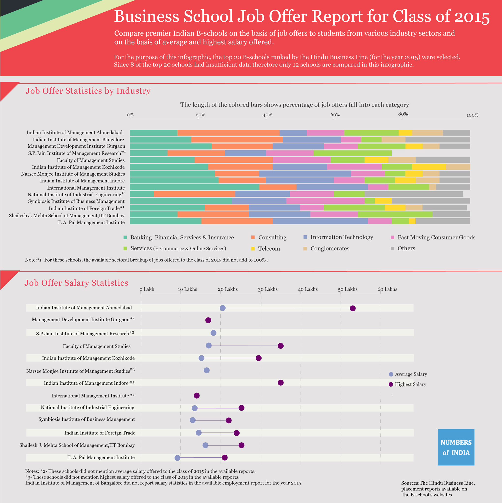

June is here, it’s about time for onset of new academic session at many Indian Business schools. It will be worth examining the job offer statistics for the outgoing class of 2016.
For many B-schools, the placements statistics for class 2016 is still not available therefore we thought let’s compare the premier Indian B-school based on the job offer reports for the class 2015.